Mid-Season Awards!
Biggest Surprise
Cooper Kupp - I guess we really shouldn’t seem that surprised that Stafford is making Kupp so much better but damn. No less than 10 targets for Kupp in any game, on pace for one of the best seasons of all time. He’s makes the tough catches, he gets the separation for short TDs, he’s wide ass open alllll the time. What a pick Tony, and he’s floated Tony to near the top.
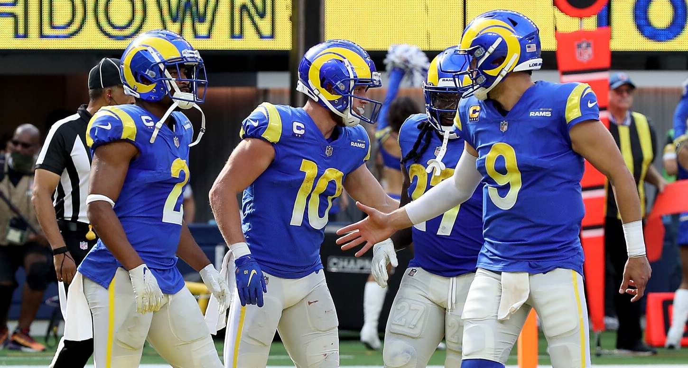
Biggest Letdown
Stefon Diggs - When Ian picked him I think we all thought it was just a tad of a stretch but liked the pick. Glad to not be that person who stretched to grab him. He hasn’t been the worst, but I’m surprised he hasn’t found a way to ten interceptions in a game yet.
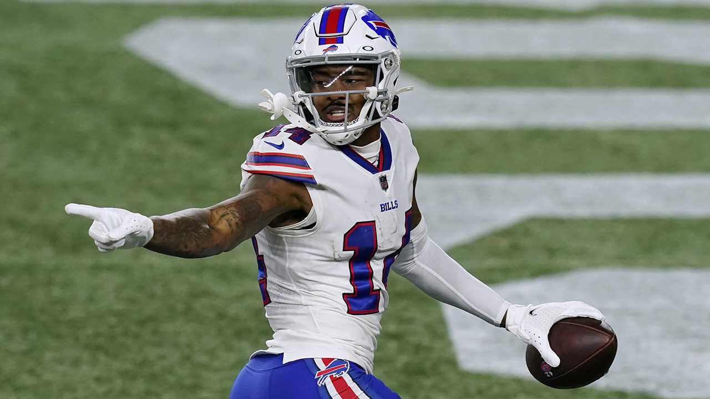
Brightest Future
Najee Harris & Ja’Marr Chase
How can you split hairs with these guys? I would love to have one of these guys on my team right now and just sign up for the decade of greatness that’s to come. I am absolutely in love with what these guys can do on the field.
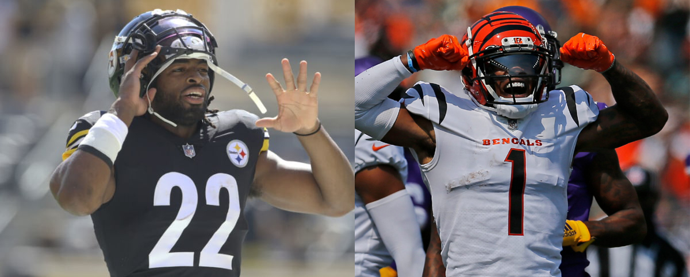
Sinking Ship
Odell Beckham Jr. - Farewell OBJ, and welcome Odell - which sounds like an old man name, and is what he’s turned into. He might draw some attention and get kicked around from team to team now, but it’s over. His last game with 100 yards was Week 6, 2019.
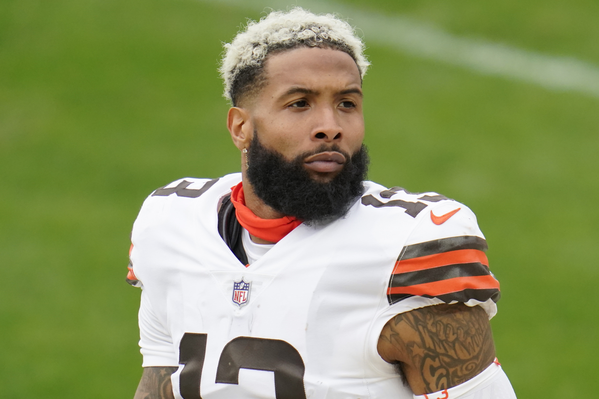
Slutler Watch
- 10th - Andy - $15 left - lost 1 straight
- 9th - Ian - $41 left - lost 2 straight
- 8th - Joel - $23 left - lost 4 straight
- 7th - Kris - $68 left - lost 3 straight
Week Eight
Matchup of the Week - Slutler Watch!
9 Ian (2-5) v. #10 Andy (2-5)
This featherweight matchup has it all! Keep an eye out on the Tight End and RB2 battles here. With Max Flex up against Gainwell, the new RB1 in PHI, and Hock v. Gesickiiiiii!
Waiver Wire Wizard
Me! Fuck you guys, I locked up Tucker for the rest of the year unless something goes wrong lol. Liking the Gainwell pickup at $6 too, but PHI has burned us before, we should know.
Power Rankings
1 - PJ (5-2) ↔️
Siting atop the league with his fifth straight win, and another week being the top scorer. Consistency has been amazing the last few weeks. Evans has really solidified the lineup leaving little gaps. Nice move to snag Gronk this week on a gamble. Big matchup with Tony this week!
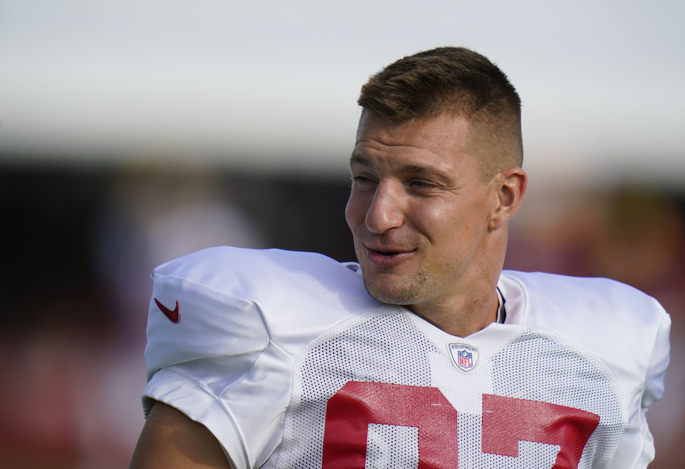
2 - Tony (5-2) ⬆️
Tony’s got a shot at the top spot! Losing Ridley hurts, but could we see another Kupp or Ekeler bomb? TY in the lineup today!
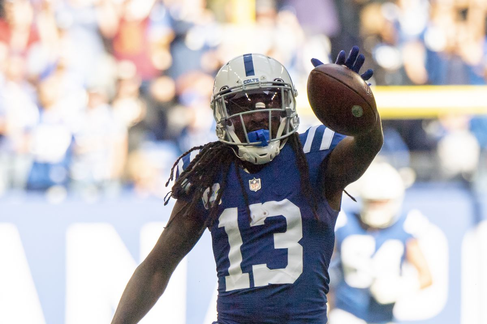
3 - Seif (4-3) ⬆️
Matt’s trying to play the silent type this year, and it’s paying off. He’s got a grip of FAAB, is playing very steady, and Cook hasn’t even been healthy. Keep an eye out on this team.
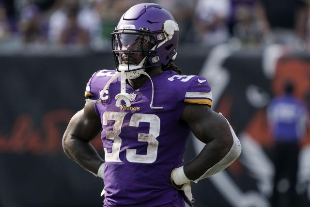
4 - Neil (4-3) ⬆️
Neil takes the easy lay up against Andy and moves to 4-3. Expect a big week from Pitts to make things real interesting in our matchup this week. A slip of out the blocks on Thursday night with Murray though - might be tough to recover (and as I typed this, I got the notif that Murray has a sprained ankle!)
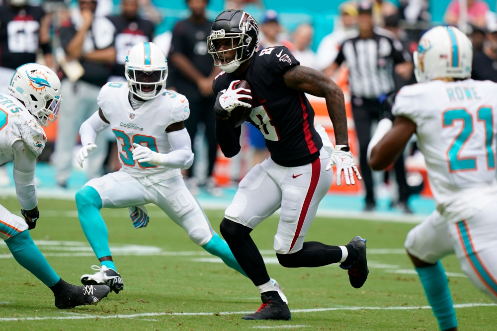
5 - Chris (3-4) ⬆️⬆️
Huge win last week, keeping Chris in the mix, when he could be in the cellar! AK47 delivers one of this signature games, beating the Hawks and making it bittersweet, but I’m sure that felt good. Good middle of the road matchup with Joel this week - one will leave desperate.
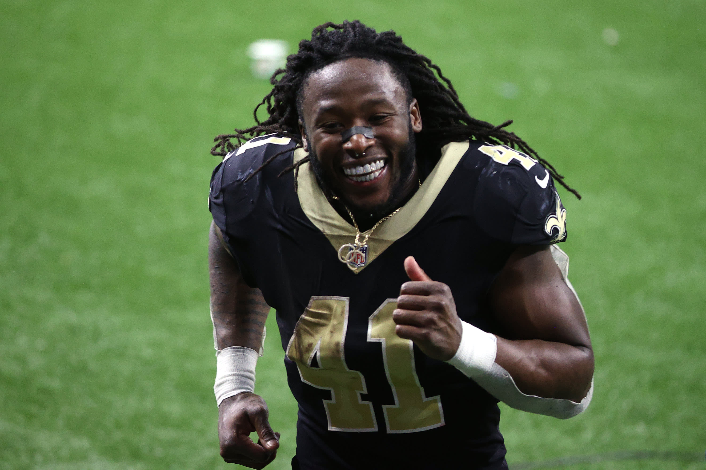
6 - Jake (4-3) ⬇️⬇️⬇️⬇️
Fucking blew it last week - traded Pittman who would have got the win for me, started Teddy Two Gloves, changed my kicker twice to guys who were playing in shiiiity weather… and Mike Davis. Looking to bounce back against Neil, in another big matchup. Question for today, how effective will Jeudy be?
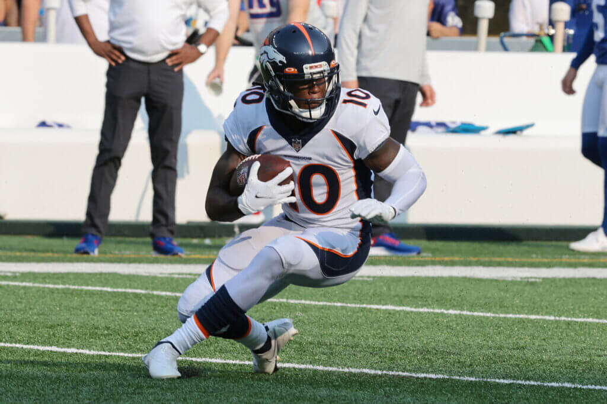
7 - Joel (3-4) ⬇️
Swinging for Edmonds was a good call, and helps keep Joel competitive while waiting for Keenan Allen and CMC to get going. Let’s hope CMC does get better soon for the sake of competitiveness in the league, and so we can watch that guy play again.
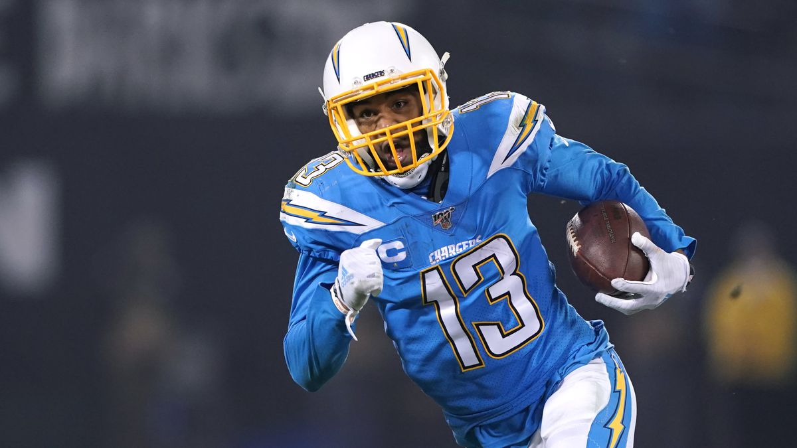
8 - Kris (3-4) ⬆️
Three straight losses, and a tough matchup this week with a lot of guys on byes. I can’t say much else but what are you doing starting Geno Smith?
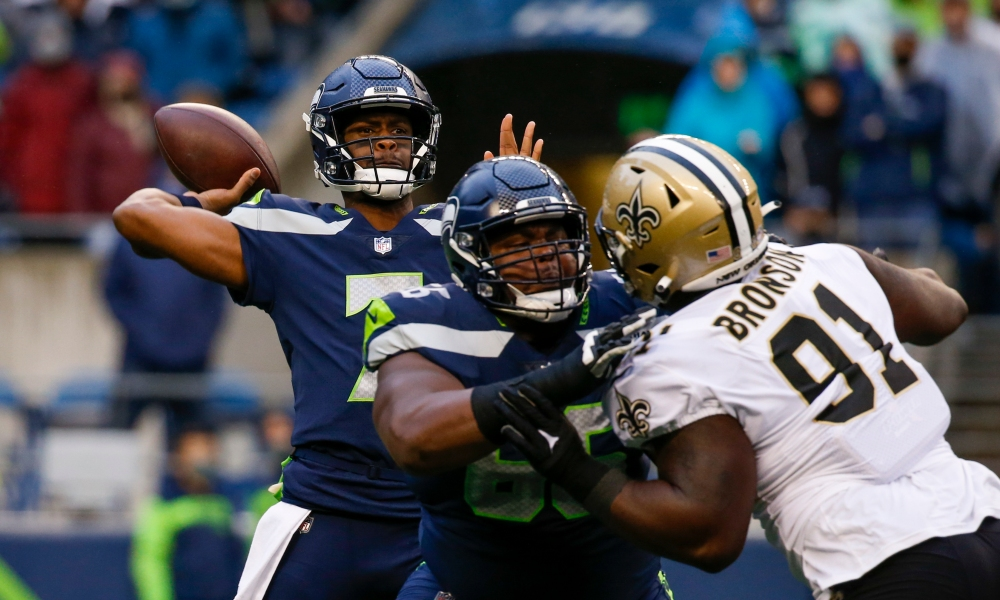
9 - Andy (2-5) ⬇️
The well is running dry, with four straight losses, and FAAB money dwindling. Andy’s going to need to be creative to stay afloat, but it seems his concrete shoes might keep him down but will probably clash with his new uniform.
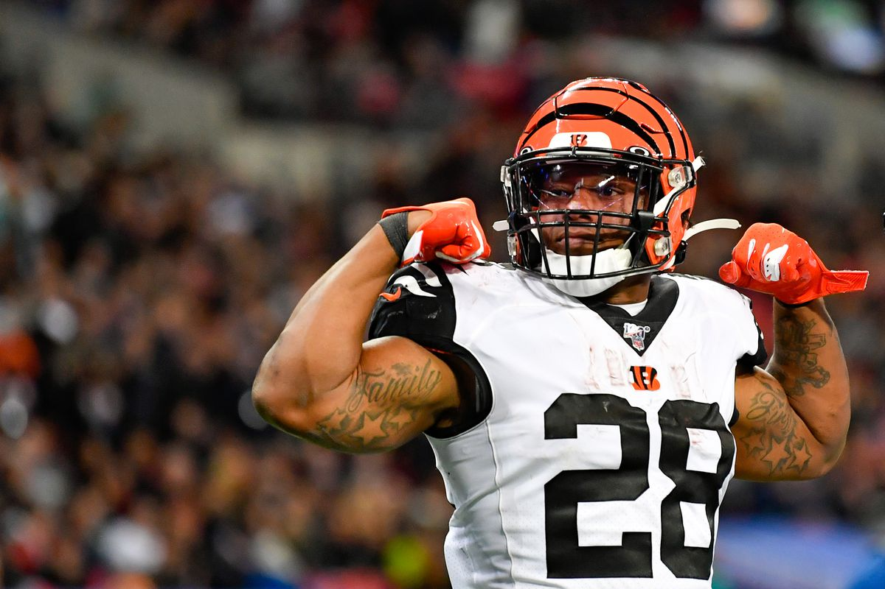
10 - Ian (2-5) ↔️
I anticipate Ian to take Andy handily this week and get out of this spot. Look for Killer Mike and Scary Terry to shine on their hallowed day.
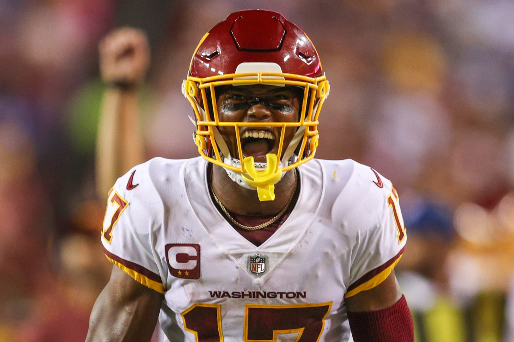
Happy Halloween you Fantasy Fucks!
- Snake